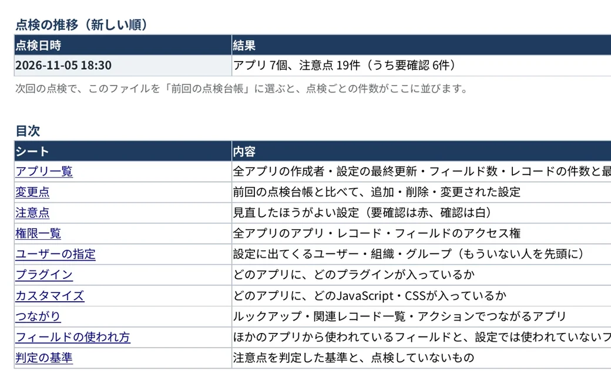

棚卸し・変更監視パックkintone管理者向けプラグイン
kintoneの全アプリを、まとめて点検。
権限・退職した人の指定・使われていないアプリを全アプリ分読み取り、点検台帳（Excel）と、上司への報告や監査の準備に使える報告書にします。
年額33,000円（税込）から。件数だけの点検は、申し込みなしで無料です。

全アプリの、ここを点検します
アプリを1つずつ開かないと確かめにくい設定を、全アプリまとめて調べます。
権限
Everyoneに「アプリ管理」「削除」「書き出し」がある設定や、ユーザー個人の指定。
退職・異動した人
アクセス権・プロセス管理・通知・一覧の条件に残っている、もういない人や組織。
使われていないアプリ
180日以上更新されていないアプリと、どのアプリにも追加されていないプラグイン。
ガイドラインの項目
kintoneガバナンスガイドラインの点検項目。スペースの外のアプリ、外部のJavaScriptなど。
点検の結果は、そのまま資料に

全アプリの点検台帳（Excel）
アプリ一覧・権限・ユーザーの指定・注意点・つながりなどを、13のシートにまとめます。注意点には対応方針・担当・期限を、人ごとの権限の一覧には見直しの結果を書き込めます。

始め方と料金
まず無料で件数を見て、30日間すべての機能を試してから、ご契約いただけます。
件数だけの無料点検
0円・申し込み不要
見直したほうがよい設定の件数と、例が2つまで分かります。
30日間の無料試用
0円・カード不要
すべての機能で、どのアプリのどの設定かまで一覧にし、資料も作れます（「試用版」と入ります）。
ご契約
年額33,000円から
社内に出す正式な点検台帳と報告書を作れます。前回からの変更も分かります。
ご契約の料金（年額・税込）
アプリ100個まで
33,000円
月あたり2,750円
アプリ500個まで
99,000円
月あたり8,250円
アプリの数の上限なし
198,000円
月あたり16,500円
kintoneの環境ごとの、1年単位の料金です（月払いはありません）。お支払いはカードか請求書払い（銀行振込）です。利用人数では増えません。アプリの数は、件数だけの無料点検で分かります。kintoneのスタンダードコース・ワイドコースで使えます。
使い始めるまで
- ダウンロード各プラグインのページから、zipファイルを保存します。
- kintoneに読み込む「kintoneシステム管理」の「プラグイン」で読み込みます。
- アプリに追加アプリにプラグインを追加すると、一覧画面にボタンが出ます。
読み込みには、kintoneシステム管理者の権限が必要です。入れる前に、デモでブラウザのまま試せます（登録不要）。
安心してお使いいただくために
プラグインはお使いのブラウザの中で動き、結果はあなたのパソコンにだけ保存されます。
お使いのkintoneアプリの設定
読み取るだけ
ブラウザの中のプラグイン表や資料にまとめる
保存
あなたのパソコンExcel・CSV・PDF
台帳屋のサーバー・外部のサービス
には、送りません
- 外部と通信しません通信するのはお使いのkintoneだけです。台帳屋のサーバーや外部サービスとは通信しません。
- 設定やレコードを変えません読み取るのはアプリの設定だけです（使われていないアプリを調べるときだけ、レコードの件数と最終更新日時を確かめます）。
- APIトークン・パスワードは不要ログイン中のユーザーの権限で動きます。
- 中身を確かめられますコードは圧縮・難読化していないため、情報システム部門で中身を確認できます。
導入前の確認事項（使用するAPIの一覧など。印刷して導入審査に使えます）
よくあるご質問
何が有料で、何が無料ですか？
有料なのは、全アプリをまとめて点検する「棚卸し・変更監視パック」の1本だけです（年額33,000円から）。30日間はすべての機能を無料で試せます（カードの登録不要・自動で課金されません）。申し込まなくても、件数だけの点検はずっと無料です。1つのアプリずつ調べる6本のプラグインも、ずっと無料です。
件数だけの無料点検と、30日間の無料試用は、何が違いますか？
どちらも無料で、同じプラグインを使います。件数だけの無料点検は申し込み不要でずっと使え、見直したほうがよい設定が「何件あるか」と、例が2つまで分かります。30日間の無料試用は申し込み制（カード不要・環境ごとに1回）で、すべての機能を使って「どのアプリの、どの設定か」まで一覧にし、点検台帳（Excel）と報告書も作れます（「試用版」と入ります）。見本で違いを見る
試用で作った資料は、そのまま社内に出せますか？
試用中に作る点検台帳と報告書には「試用版」と入ります。社内に出す正式な資料は、ご契約のあとに同じ操作で作成してください。試用で作った点検台帳は、次の点検で「前回の点検台帳」として使えます。試用は、kintoneの環境ごとに1回です。
利用人数やアプリ数に制限はありますか？
無料のプラグインは、利用人数やアプリ数の制限はありません。有料のプラグインは、アプリの数で3つのプラン（100個まで・500個まで・上限なし）があり、利用人数による追加料金はありません。
請求書払い（銀行振込）はできますか？
できます。年額のご契約は、カードのほかに請求書払い（銀行振込）もお選びいただけます。会社名・プラン・kintoneの環境・請求書の宛名をメールでお知らせください。くわしく
アプリの管理者でなくても使えますか？
設定の読み取りには、そのアプリの管理権限が必要です。権限が足りない項目は、その旨を画面に表示します。
ISMSなどの、アクセス権の見直しに使えますか？
点検台帳の「対象ごとの権限」のシートに、ユーザー・組織・グループごとに、どのアプリで何ができるかをまとめます。見直しの結果・確認者・確認日を書き込む列があり、次の点検では、前回の見直しのとおりに直っているか（「外す」とした人が残っていないか）も確かめます。報告書には点検した人・日時・判定の基準・照合用の値が入ります。基準に適合していることを示すものではないため、監査で求められる形式は、監査を行う方に確かめてください。
使えない画面やアプリはありますか？
パソコン版の画面のみに対応しています。棚卸し・変更監視パックは、ゲストスペースのアプリも点検します。無料の6本は、ゲストスペースのアプリには、現在対応していません。
新しい版が出たら、どうすれば更新できますか？
新しい版のzipファイルを、最初と同じように「kintoneシステム管理」の「プラグイン」で読み込むと、上書きされます。アプリへの追加をやり直す必要はありません。
サイボウズの製品ですか？
いいえ。サイボウズ株式会社とは関係のない、個人の開発者による製品です。
不具合や要望は、どこに連絡すればよいですか？
daichoya.plugins@gmail.com までお知らせください。返信は平日の夜と土日に行っています。
まずは30日間、無料で試してください
すべての機能を使えます。カードの登録は不要で、自動で課金されることはありません。
台帳屋は個人で開発・運営しています。不具合の修正やkintoneの仕様変更への対応は、各プラグインのページの更新履歴でお知らせします。